Waveguide Eigenvalue Benchmark
A discussion of eigenvalue problems in electromagnetics, and the basis for the modeling in this section can be found in (Reddy et al., 1994). In this set of verification exercises, fundamental wavenumbers for various waveguide geometries will be calculated based on that discussion and compared to the results shown using the HELM10 FEM code developed by Reddy et al.
Calculation of the Fundamental Eigenvalue and Associated Field Distribution
Eigenvalue calculation in MOOSE is handled via the SLEPc (Hernandez et al., 2005) package, which is built within PETSc. Using SLEPc, a selection of the largest or smallest (real and imaginary), closest to a target component (real and imaginary) or magnitude, or all available eigenvalues within a given problem can be obtained. Whether more than one eigenvalue can be calculated in a given problem is both a consequence of the problem being considered (in the case of the waveguides, whether the geometry can handle more than one mode) and the SLEPc solver options, the nuances of which are discussed in great detail on the SLEPc webpage. The examples presented in this section will all use the SLEPc default, which is to calculate the smallest real eigenvalue.
The physical equation being solved for is a Helmholtz-style equation for a scalar potential, given as:
(1)where is the eigenvalue and is the associated eigenfunction. For a transverse electric (TE) mode, , and for a transverse magnetic (TM) mode, . As previously stated, several waveguide geometries (rectangular, circular, and coaxial) will be simulated to determine the fundamental TM mode wavenumber that can exist in each one. In TM mode simulations, the scalar potential is set to zero on waveguide perfectly conducting walls in order to satisfy the conditions on . Given one can also find expressions for and :
where is the characteristic wave impedance for the TM mode in the waveguide. These expressions were are given in (Harrington, 1961), where Harrington showed that the transverse electric field distributions could be determined from a given eigenfunction that satisfies Eq. (1). Summary figures of the geometries are shown in the following sections, with information on the sizing and mesh resolution used in each case.
Model Geometries and Meshes
Rectangular
For the simulation results from HELM10, Reddy specified the sizing relationship for the geometry in Figure 1 of . In the EM module simulations, for simplicity. The mesh was made up of 2500 structured triangular elements, generated using the MOOSE mesh system.
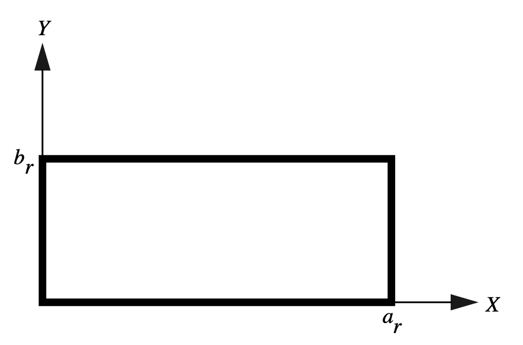
Figure 1: Rectangular waveguide geometry, from (Reddy et al., 1994).
Circular
For the simulation results from HELM10, Reddy specified a radius of unity for the geometry shown in Figure 2. The EM module calculation used a mesh of 417 unstructured triangular elements generated using Gmsh 4.6.0 with a scaling factor of 0.5 using a Delaunay triangulation algorithm.
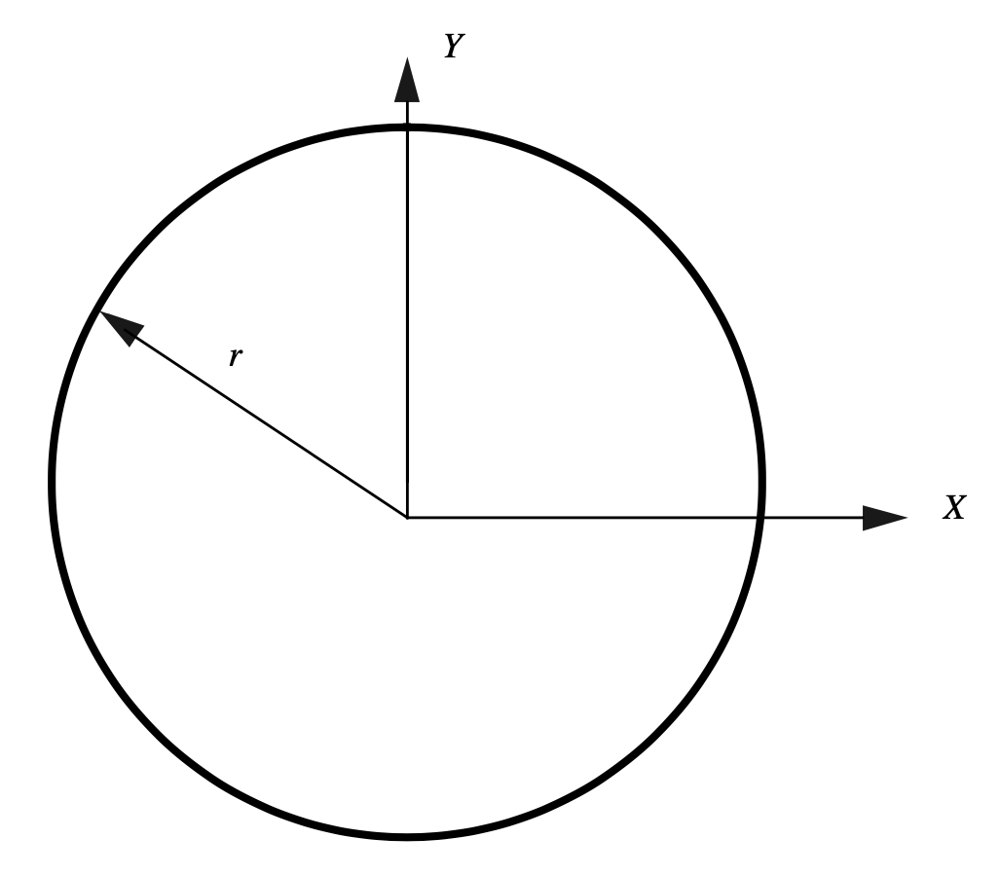
Figure 2: Circular waveguide geometry, from (Reddy et al., 1994).
With Gmsh installed and available in the system PATH, simply run the following command at the location of circle.geo:
gmsh -2 circle.geo -clscale 0.5 -order 1 -algo del2d
The .geo file for this geometry is shown below:
// Use global scaling factor = 0.5 to duplicate current saved MSH file.
SetFactory("OpenCASCADE");
Circle(1) = {0, 0, 0, 1, 0, 2*Pi};
Line Loop(1) = {1};
Plane Surface(1) = {1};
Physical Surface(1) = {1};
Physical Line("outer") = {1};
and this generates the following mesh:
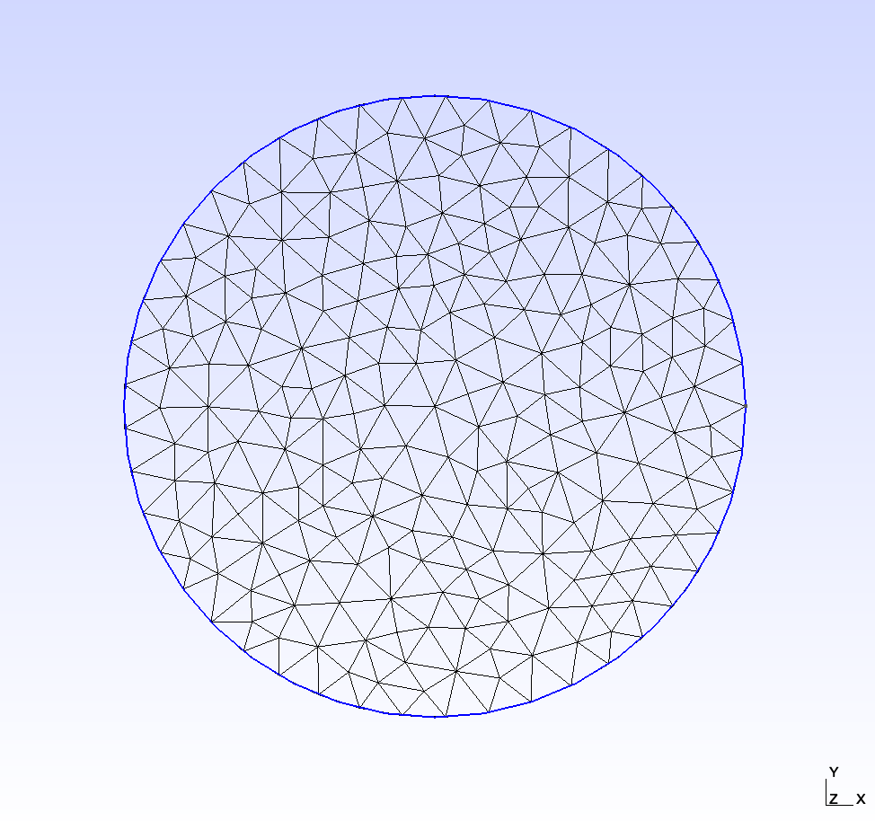
Figure 3: Mesh used in the circle case of the electromagnetic eigenvalue benchmark study.
Coaxial
For the simulations results from HELM10, Reddy specified a sizing relationship for the geometry shown in Figure 4. In the EM module simulations, , and the mesh had 626 unstructured triangular elements generated using Gmsh 4.6.0 with a scaling factor of 0.4 using a Delaunay triangulation algorithm.
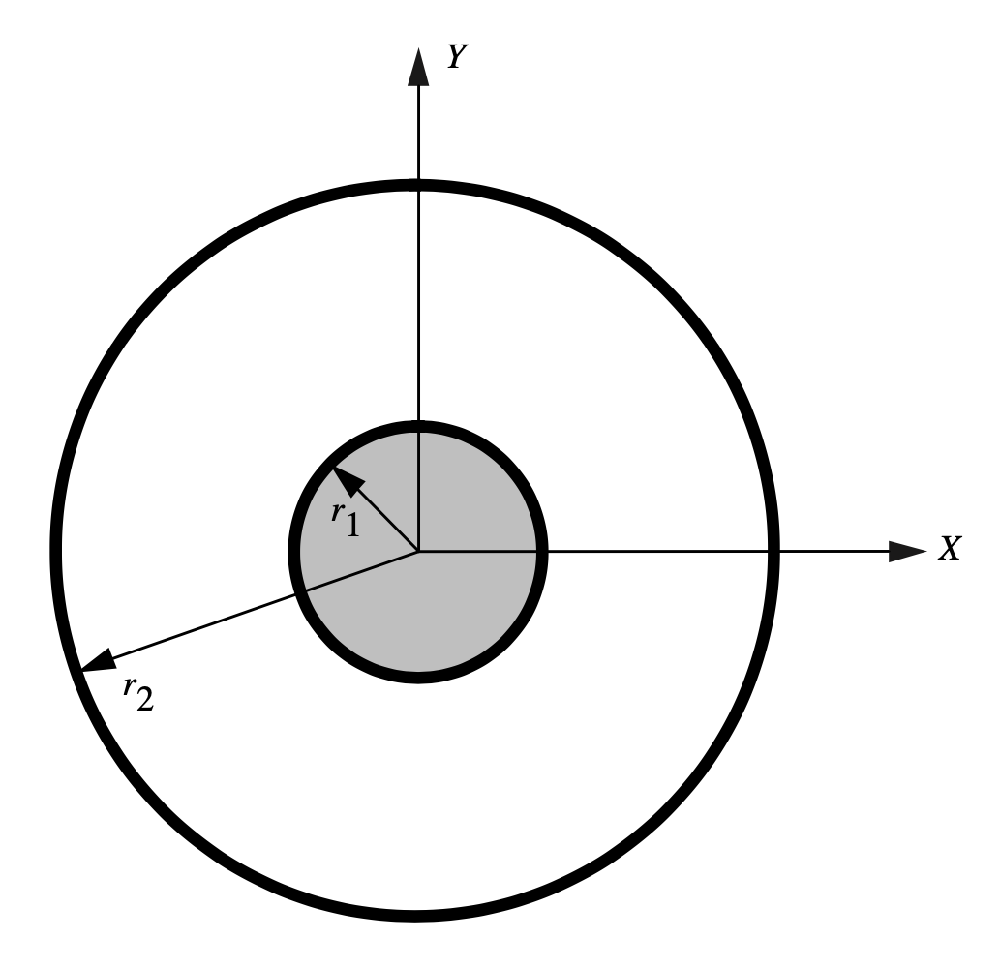
Figure 4: Coaxial waveguide geometry, from (Reddy et al., 1994).
With Gmsh installed and available in the system PATH, simply run the following command at the location of coaxial.geo:
gmsh -2 coaxial.geo -clscale 0.4 -order 1 -algo del2d
The .geo file for this geometry is shown below:
// Use global scaling factor = 0.4 to duplicate current saved MSH file.
SetFactory("OpenCASCADE");
Circle(1) = {0, 0, 0, 0.5, 0, 2*Pi};
Circle(2) = {0, 0, 0, 0.125, 0, 2*Pi};
Line Loop(1) = {1};
Line Loop(2) = {2};
Plane Surface(1) = {1, 2};
Physical Surface(1) = {1};
Physical Line("outer") = {1};
Physical Line("inner") = {2};
and this generates the following mesh file:
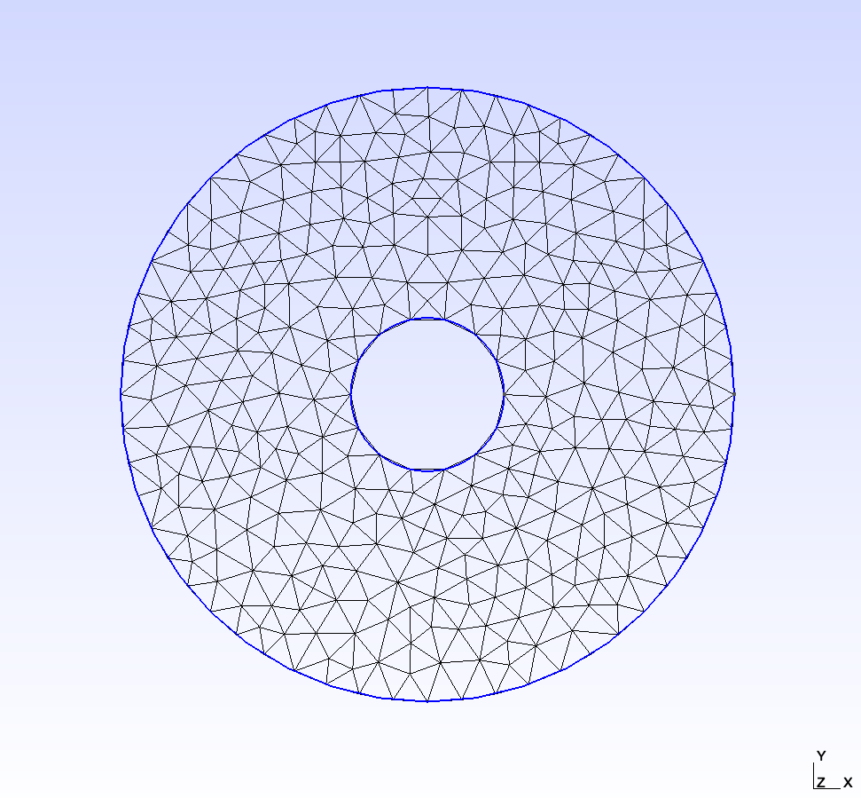
Figure 5: Mesh used in the coaxial case of the electromagnetic eigenvalue benchmark study.
Input File
A base input file was used to run each case in this benchmark.
# Base input file for eigenvalue example tests for multiple waveguide geometries
# RECTANGULAR (Default)
# Mesh file rectangular.e based on Mesh block:
# [Mesh]
# [gmg]
# type = GeneratedMeshGenerator
# dim = 2
# nx = 50
# ny = 25
# xmin = 0
# xmax = 2
# ymin = 0
# ymax = 1
# elem_type = TRI3
# []
# []
# Expected analytic eigenvalue = 12.337005
# EM Module calculated eigenvalue = 12.363806
# CIRCULAR (Mesh/file=circle.msh, BCs/active='circle eigen_circle')
# Mesh generated using gmsh
# radius = 1
# center = (0, 0)
# Expected analytic eigenvalue = 5.784025
# EM Module calculated eigenvalue = 5.824152
# COAXIAL (Mesh/file=coaxial.msh, BCs/active='coaxial eigen_coaxial')
# Mesh generated using gmsh with coaxial.geo
# inner_radius = 0.125
# outer_radius = 0.5
# center = (0, 0)
# Expected analytic eigenvalue = 67.108864
# EM Module calculated eigenvalue = 68.007802
[Mesh<<<{"href": "../../../syntax/Mesh/index.html"}>>>]
[fmg]
type = FileMeshGenerator<<<{"description": "Read a mesh from a file.", "href": "../../../source/meshgenerators/FileMeshGenerator.html"}>>>
file<<<{"description": "The filename to read."}>>> = rectangular.e
[]
[]
[Variables<<<{"href": "../../../syntax/Variables/index.html"}>>>]
[potential]
order<<<{"description": "Specifies the order of the FE shape function to use for this variable (additional orders not listed are allowed)"}>>> = FIRST
family<<<{"description": "Specifies the family of FE shape functions to use for this variable"}>>> = LAGRANGE
[]
[]
[AuxVariables<<<{"href": "../../../syntax/AuxVariables/index.html"}>>>]
[Ex]
order<<<{"description": "Specifies the order of the FE shape function to use for this variable (additional orders not listed are allowed)"}>>> = CONSTANT
family<<<{"description": "Specifies the family of FE shape functions to use for this variable"}>>> = MONOMIAL
[]
[Ey]
order<<<{"description": "Specifies the order of the FE shape function to use for this variable (additional orders not listed are allowed)"}>>> = CONSTANT
family<<<{"description": "Specifies the family of FE shape functions to use for this variable"}>>> = MONOMIAL
[]
[]
[Kernels<<<{"href": "../../../syntax/Kernels/index.html"}>>>]
[diff]
type = Diffusion<<<{"description": "The Laplacian operator ($-\\nabla \\cdot \\nabla u$), with the weak form of $(\\nabla \\phi_i, \\nabla u_h)$.", "href": "../../../source/kernels/Diffusion.html"}>>>
variable<<<{"description": "The name of the variable that this residual object operates on"}>>> = potential
[]
[coeff]
type = CoefReaction<<<{"description": "Implements the residual term (p*u, test)", "href": "../../../source/kernels/CoefReaction.html"}>>>
coefficient<<<{"description": "Coefficient of the term"}>>> = -1
variable<<<{"description": "The name of the variable that this residual object operates on"}>>> = potential
extra_vector_tags<<<{"description": "The extra tags for the vectors this Kernel should fill"}>>> = 'eigen'
[]
[]
[AuxKernels<<<{"href": "../../../syntax/AuxKernels/index.html"}>>>]
[Ex_aux]
type = PotentialToFieldAux<<<{"description": "An AuxKernel that calculates the electrostatic electric field given the electrostatic potential.", "href": "../../../source/auxkernels/PotentialToFieldAux.html"}>>>
variable<<<{"description": "The name of the variable that this object applies to"}>>> = Ex
gradient_variable<<<{"description": "The variable from which to compute the gradient component"}>>> = potential
sign<<<{"description": "Sign of potential gradient."}>>> = negative
component<<<{"description": "The gradient component to compute"}>>> = x
[]
[Ey_aux]
type = PotentialToFieldAux<<<{"description": "An AuxKernel that calculates the electrostatic electric field given the electrostatic potential.", "href": "../../../source/auxkernels/PotentialToFieldAux.html"}>>>
variable<<<{"description": "The name of the variable that this object applies to"}>>> = Ey
gradient_variable<<<{"description": "The variable from which to compute the gradient component"}>>> = potential
sign<<<{"description": "Sign of potential gradient."}>>> = negative
component<<<{"description": "The gradient component to compute"}>>> = y
[]
[]
[BCs<<<{"href": "../../../syntax/BCs/index.html"}>>>]
active<<<{"description": "If specified only the blocks named will be visited and made active"}>>> = 'rectangle eigen_rectangle'
[rectangle]
type = DirichletBC<<<{"description": "Imposes the essential boundary condition $u=g$, where $g$ is a constant, controllable value.", "href": "../../../source/bcs/DirichletBC.html"}>>>
variable<<<{"description": "The name of the variable that this residual object operates on"}>>> = potential
boundary<<<{"description": "The list of boundary IDs from the mesh where this object applies"}>>> = 'left right top bottom'
value<<<{"description": "Value of the BC"}>>> = 0
[]
[eigen_rectangle]
type = EigenDirichletBC<<<{"description": "Dirichlet BC for eigenvalue solvers", "href": "../../../source/bcs/EigenDirichletBC.html"}>>>
variable<<<{"description": "The name of the variable that this residual object operates on"}>>> = potential
boundary<<<{"description": "The list of boundary IDs from the mesh where this object applies"}>>> = 'left right top bottom'
[]
# alternative BCs for circle case
[circle]
type = DirichletBC<<<{"description": "Imposes the essential boundary condition $u=g$, where $g$ is a constant, controllable value.", "href": "../../../source/bcs/DirichletBC.html"}>>>
variable<<<{"description": "The name of the variable that this residual object operates on"}>>> = potential
boundary<<<{"description": "The list of boundary IDs from the mesh where this object applies"}>>> = 'wall'
value<<<{"description": "Value of the BC"}>>> = 0
[]
[eigen_circle]
type = EigenDirichletBC<<<{"description": "Dirichlet BC for eigenvalue solvers", "href": "../../../source/bcs/EigenDirichletBC.html"}>>>
variable<<<{"description": "The name of the variable that this residual object operates on"}>>> = potential
boundary<<<{"description": "The list of boundary IDs from the mesh where this object applies"}>>> = 'wall'
[]
# alternative BCs for coaxial case
[coaxial]
type = DirichletBC<<<{"description": "Imposes the essential boundary condition $u=g$, where $g$ is a constant, controllable value.", "href": "../../../source/bcs/DirichletBC.html"}>>>
variable<<<{"description": "The name of the variable that this residual object operates on"}>>> = potential
boundary<<<{"description": "The list of boundary IDs from the mesh where this object applies"}>>> = 'outer inner'
value<<<{"description": "Value of the BC"}>>> = 0
[]
[eigen_coaxial]
type = EigenDirichletBC<<<{"description": "Dirichlet BC for eigenvalue solvers", "href": "../../../source/bcs/EigenDirichletBC.html"}>>>
variable<<<{"description": "The name of the variable that this residual object operates on"}>>> = potential
boundary<<<{"description": "The list of boundary IDs from the mesh where this object applies"}>>> = 'outer inner'
[]
[]
[VectorPostprocessors<<<{"href": "../../../syntax/VectorPostprocessors/index.html"}>>>]
[eigenvalues]
type = Eigenvalues<<<{"description": "Returns the Eigen values from the nonlinear Eigen system.", "href": "../../../source/vectorpostprocessors/Eigenvalues.html"}>>>
[]
[]
[Executioner<<<{"href": "../../../syntax/Executioner/index.html"}>>>]
type = Eigenvalue
[]
[Outputs<<<{"href": "../../../syntax/Outputs/index.html"}>>>]
csv<<<{"description": "Output the scalar variable and postprocessors to a *.csv file using the default CSV output."}>>> = true
exodus<<<{"description": "Output the results using the default settings for Exodus output."}>>> = false
execute_on<<<{"description": "The list of flag(s) indicating when this object should be executed. For a description of each flag, see https://mooseframework.inl.gov/source/interfaces/SetupInterface.html."}>>> = FINAL
[]In order to simulate the right case, the following command line arguments should be applied to the input file at runtime:
Rectangular
Outputs/file_base=eigen_rectangular_out
Circle
Outputs/file_base=eigen_circular_out BCs/active="circle eigen_circle" Mesh/file=circle.msh
Coaxial
Outputs/file_base=eigen_coaxial_out BCs/active="coaxial eigen_coaxial" Mesh/file=coaxial.msh
Results and Discussion
Calculated cutoff wavenumbers using the module for the fundamental TM mode in each geometry are presented in Table 1. Results are in excellent agreement with the analytical solution presented by Harrington and the results calculated by HELM10, with at most 0.68% relative error.
Table 1: Cutoff wavenumbers for various waveguide geometries and modes.
| Shape | TM | Quantity | Analytical (Harrington, 1961) | EM Module | HELM10 (Reddy et al., 1994) |
|---|---|---|---|---|---|
| Rectangular | 11 | 7.027 | 7.032 | 7.027 | |
| Circular | 01 | 2.405 | 2.408 | 2.413 | |
| Coaxial | 01 | 1.024 | 1.031 | 1.030 |
Reddy presents field distributions as glyph vector fields rather than discrete contours, so a qualitative comparison is performed for field distribution verification. Comparisons for each geometry case are shown in Figure 6 and Figure 7 for the rectangular geometry, Figure 8 and Figure 9 for the circular geometry, and Figure 12 and Figure 13 for the coaxial geometry. Overall, results are in general in good agreement with that of HELM10, in terms of vector field orientation, except for the circular TM01 waveguide case. In this instance, potential distribution was identical except for the sign, where the EM module predicted a positive peak in the center of the waveguide, and HELM10 predicted a negative peak. This difference may be the result of the module wave directionality assumption (both assuming -direction, but might be differing in sign). This bears out in a comparison with the COMSOL package, where the TM01 result for a circular waveguide is shown below in Figure 10 and both the EM module and COMSOL make the assumption of a component, while (Reddy et al., 1994) isn't clear on their assumption here. Regardless, either result fits with the generic expected field distribution presented by Jin in Figure 11, where the solid lines represent the electric field lines. Thus, both HELM10 and the EM module are consistent with established literature expectations for this waveguide geometry. Other visual differences in the vector glyph distribution and magnitude in all cases are due to mesh differences and Paraview visualization software scaling.
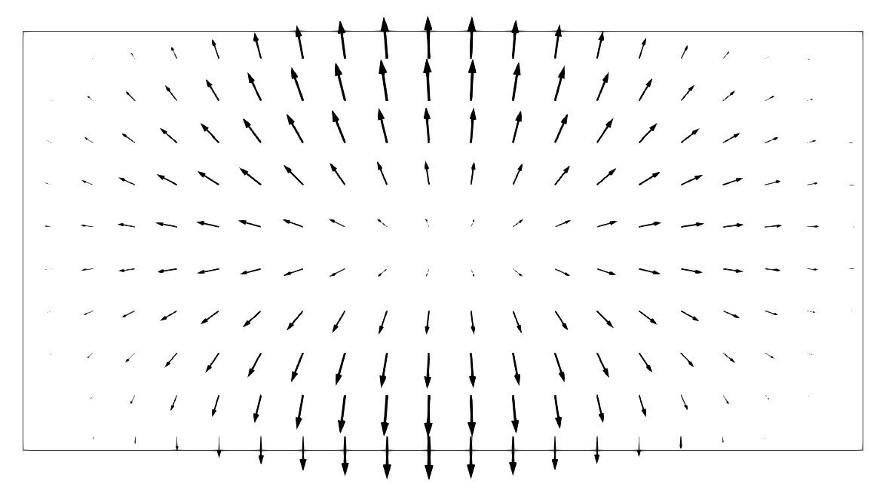
Figure 6: TM11 mode electric field distribution in a rectangular waveguide, calculated by the EM module.
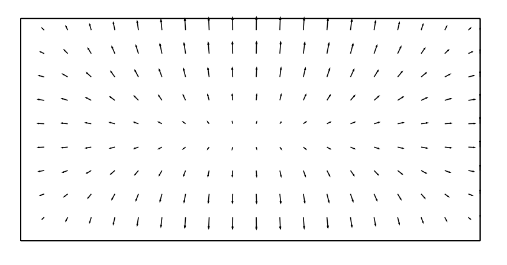
Figure 7: TM11 mode electric field distribution in a rectangular waveguide, calculated by HELM10. (Reddy et al., 1994)
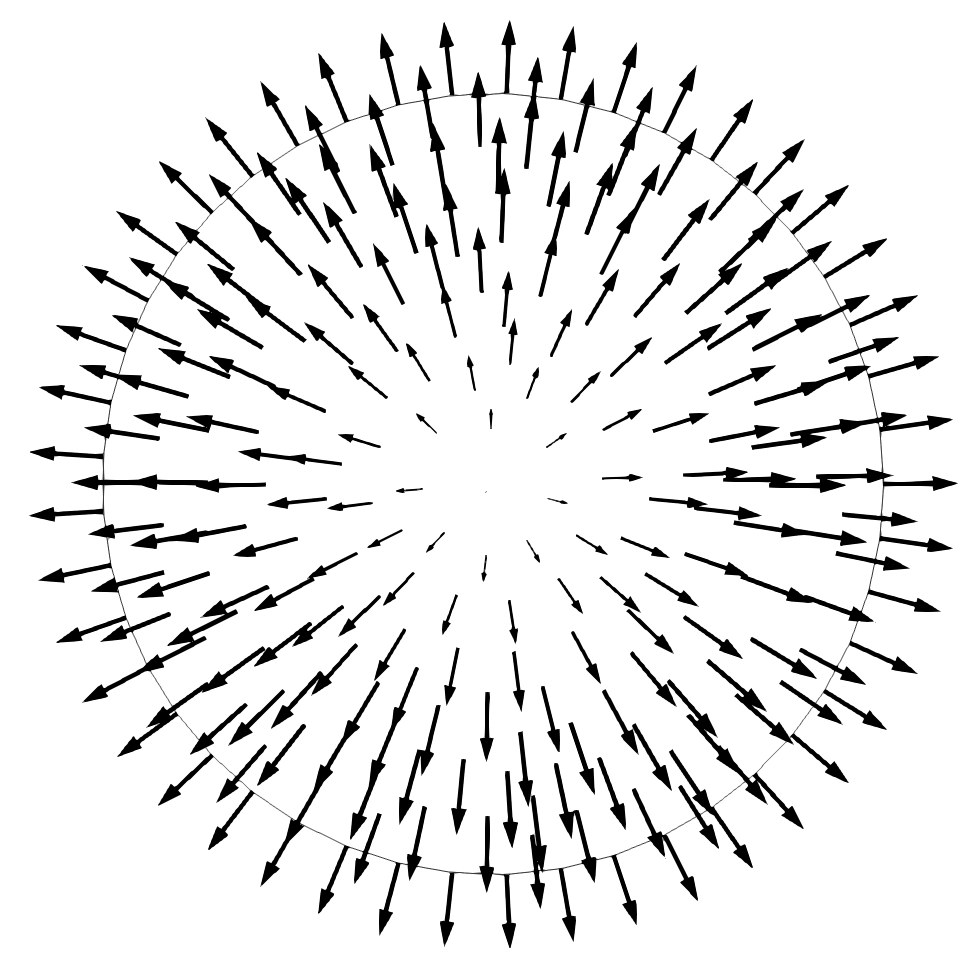
Figure 8: TM01 mode electric field distribution in a circular waveguide, calculated by the EM module.
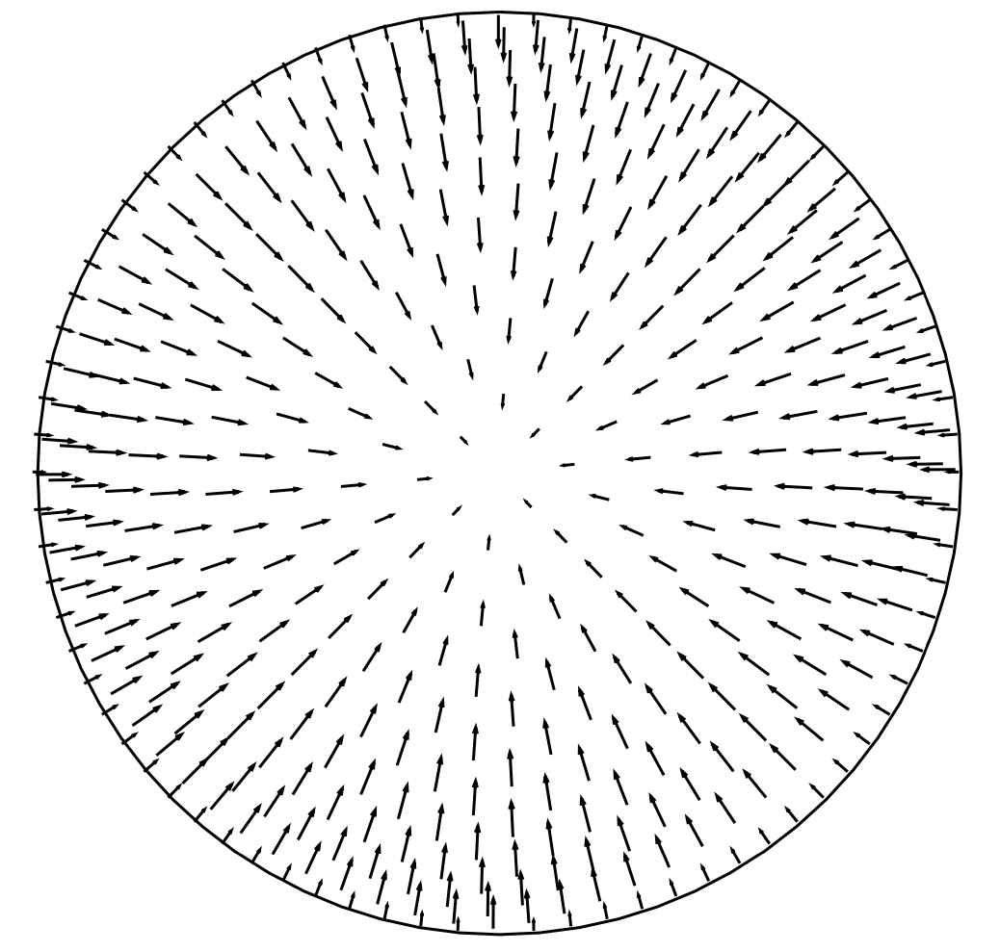
Figure 9: TM01 mode electric field distribution in a circular waveguide, calculated by HELM10. (Reddy et al., 1994)
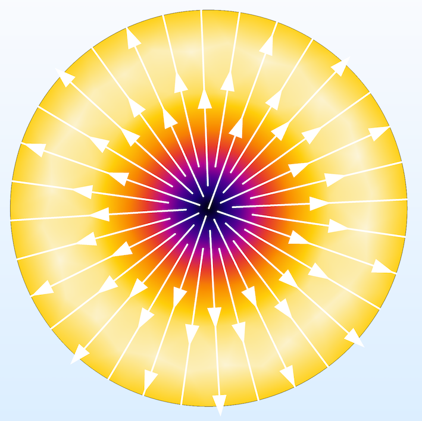
Figure 10: TM01 mode electric field distribution in a circular waveguide, calculated by the COMSOL RF Module in (Tomasian, 2019). (Coloring is the electric field norm)
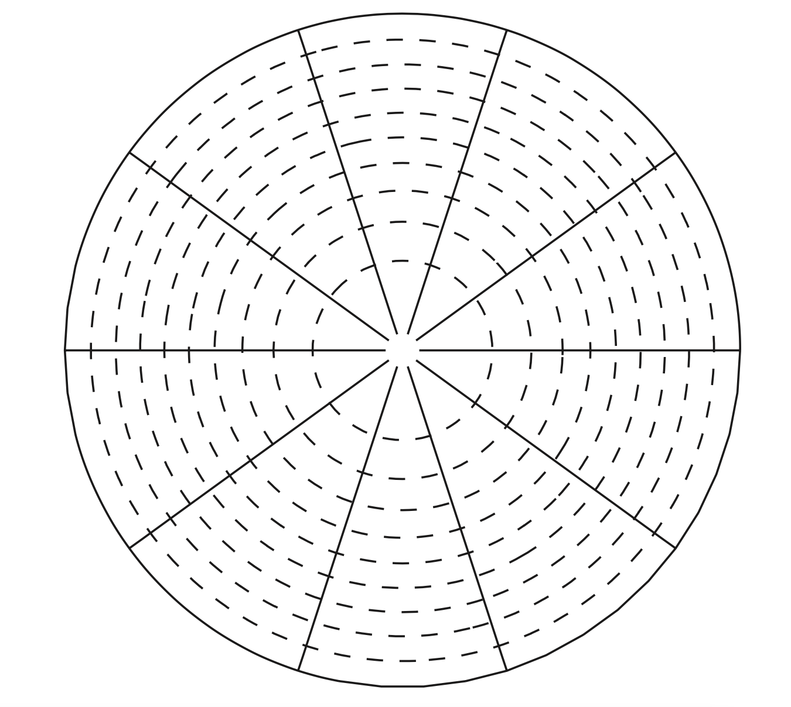
Figure 11: TM01 mode field distribution in a circular waveguide, presented in (Jin, 2010). Note that the solid lines correspond to the electric field.
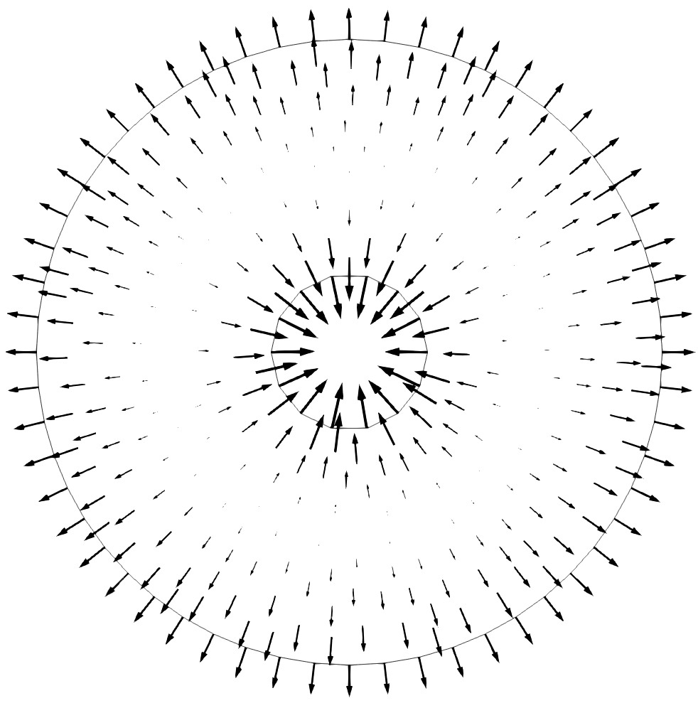
Figure 12: TM01 mode electric field distribution in a coaxial waveguide, calculated by the EM module.
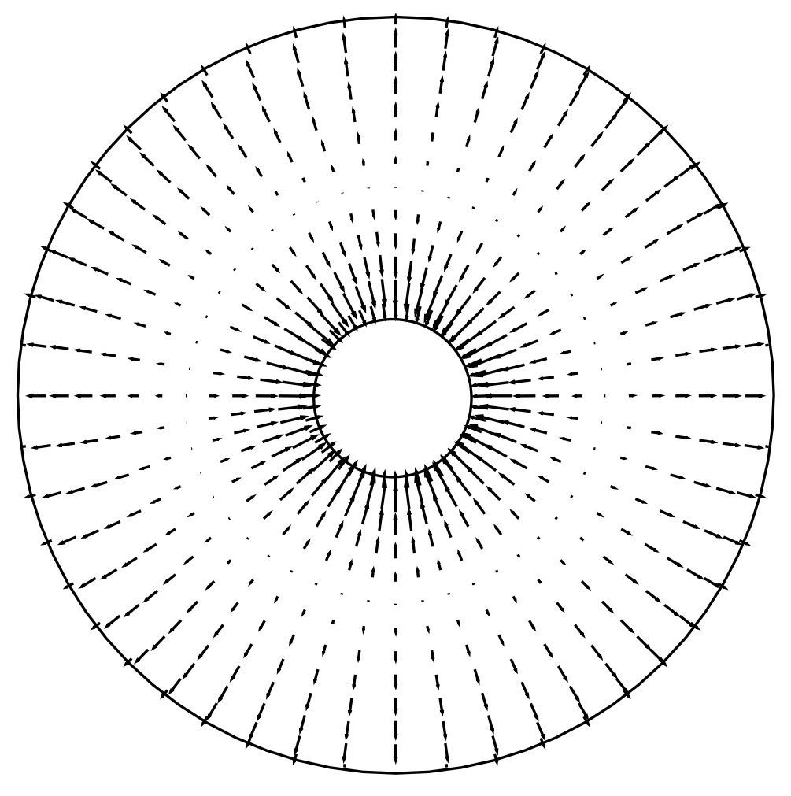
Figure 13: TM01 mode electric field distribution in a coaxial waveguide, calculated by HELM10. (Reddy et al., 1994)
References
- Roger F. Harrington.
Time-Harmonic Electromagnetic Fields.
McGraw-Hill, New York, 1961.[Export]
- Vicente Hernandez, Jose E. Roman, and Vicente Vidal.
SLEPc: a scalable and flexible toolkit for the solution of eigenvalue problems.
ACM Trans. Math. Software, 31(3):351–362, 2005.[Export]
- Jian-Ming Jin.
Theory and Computation of Electromagnetic Fields.
John Wiley & Sons, Hoboken, New Jersey, USA, 1st edition, 2010.[Export]
- C. J. Reddy, Manohar D. Deshpande, C. R. Cockrell, and Fred B. Beck.
Finite element method for eigenvalue problems in electromagnetics.
Technical Report NASA-TP-3485, National Aeronautics and Space Administration, 1994.
URL: https://ntrs.nasa.gov/citations/19950011772.[Export]
- Aline Tomasian.
Comsol blog: how to use circular ports in the rf module.
Online, May 2019.
(Accessed 2021-06-05).
URL: https://www.comsol.com/blogs/how-to-use-circular-ports-in-the-rf-module/.[Export]